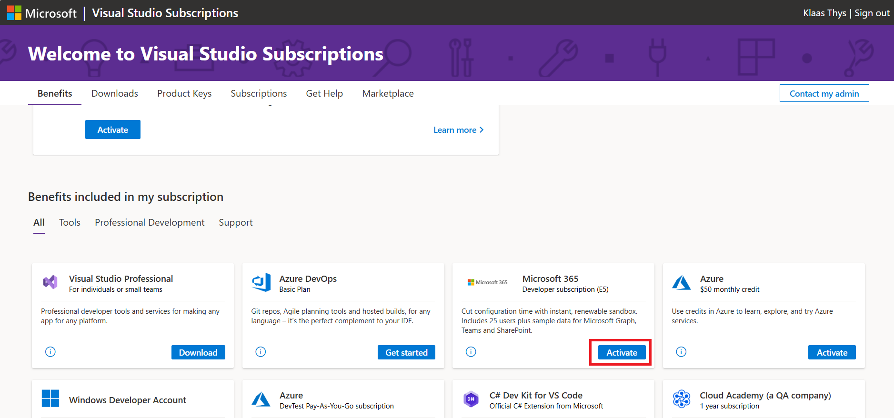
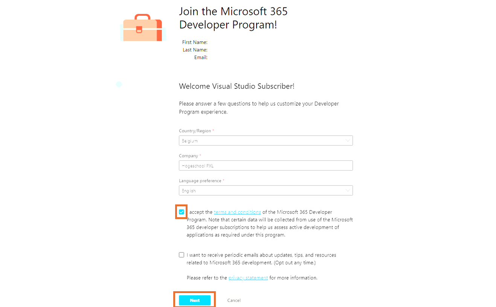
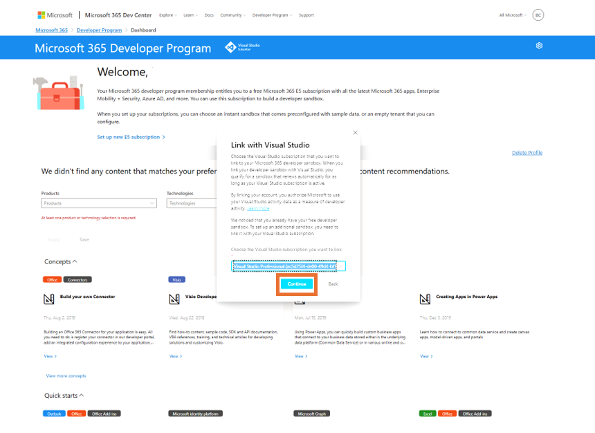

Microsoft 365-tenant
In deze handleiding doorloop je de stappen om via Visual Studio Professional een Microsoft 365-tenant aan te vragen met je persoonlijke e-mailadres.
Heb je vragen of loop je ergens vast? Neem dan contact op met je vaklector.
1. My Visual Studio
- Zorg ervoor dat je een internetbrowser opent waarin je niet bent aangemeld met je PXL-e-mailadres/Blackboard.
- Open een incognitovenster (een InPrivate-venster voor Blackboard).
- Surf naar de website https://my.visualstudio.com en meld je aan met je persoonlijke Outlook-/Hotmail-account of met het Outlook-/Hotmail-account dat je aanmaakte tijdens WPL1.
2. Benefits
Wanneer je bent aangemeld op my.visualstudio.com met je persoonlijke Outlook-/Hotmail-adres, ga je naar het tabblad "Benefits".
- In het selectieveld Subscriptions kies je "Visual Studio Professional".
- Klik daarna op de knop "Activate" bij de tegel Microsoft 365.

3. Join Microsoft 365 Developer Program
3.1. Gegevens
In het volgende scherm vul je onderstaande gegevens in:
- Country: Belgium
- Company: Hogeschool PXL
- Language Preference: English
- Vink het selectievakje aan "I accept the terms and conditions,..."
Klik vervolgens op de knop "Next".

3.2. Gebruik
In het volgende scherm krijg je onderstaande vraag:
What is your primary focus as a developer? (Choose only one)
- Selecteer "Personal Projects"
- Klik daarna op "Next"
3.3. Interest
In het volgende scherm krijg je onderstaande vraag:
What areas of Microsoft 365 development are you interested in?
- Selecteer "Microsoft identity platform"
- Klik daarna op "Save"
4. Instant Sandbox

- Selecteer de optie “Instant Sandbox” en klik dan op “Next”.
5. Aanmeldgegevens
- Selecteer Europe/Middle East/Africa als regio.
- Geef een admin-gebruikersnaam op in het formaat voornaam.achternaam.
- Stel een wachtwoord in (zorg dat je dit wachtwoord op een goede manier bewaart).
- Klik op “Set Up”.
Bewaar deze gebruikersnaam en dit wachtwoord goed; je hebt ze telkens nodig wanneer je je aanmeldt.

6. Subscription selecteren
Je krijgt nu een scherm te zien om je tenant te koppelen aan je Visual Studio Professional-abonnement.
- Selecteer het Visual Studio Professional subscription in de vervolgkeuzelijst.
- Klik op “Continue”.
